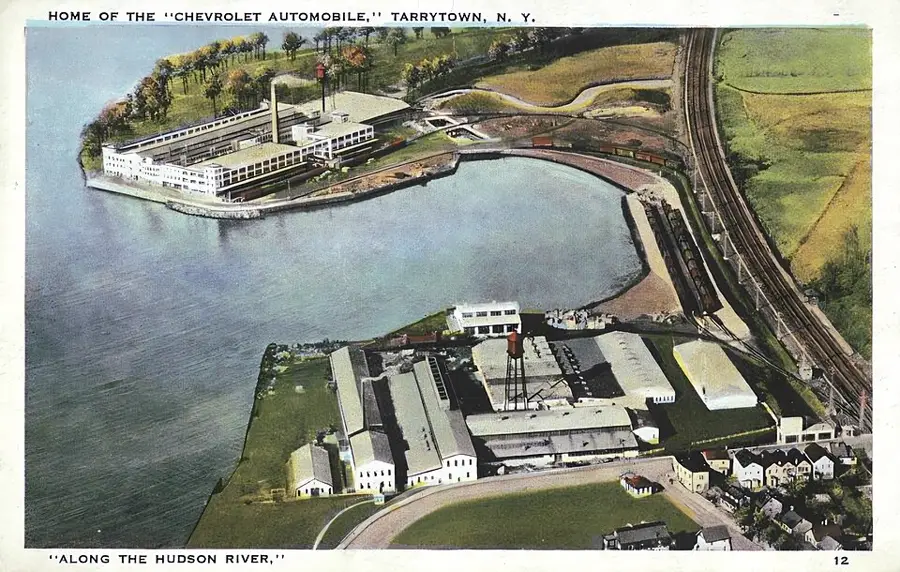

대표 로고대표 브랜드 마크
대표 로고대표 브랜드 마크쉐보레 Chevrolet
쉐보레(Chevrolet)는 1911년부터 출시된 미국 제너럴 모터스의 자사 자동차 브랜드이다. 이 브랜드는 제너럴 모터스 브랜드 중에서 가장 대중적인 것으로 인정받는다.
최종 업데이트
쉐보레는 어떤 브랜드인가
쉐보레는 미국 제너럴 모터스 산하의 자동차 브랜드이며, 대중적인 이미지를 구축하고 있다. 20가지가 넘는 다양한 승용차와 중형 트럭 모델을 자국 시장에 선보이며 주요 시장에서 활발히 사업을 전개한다.
대한민국에서는 2011년 한국지엠이 대우 브랜드를 폐지하고 쉐보레 브랜드를 도입하며 공식 표기를 변경했다. 유럽 시장에서는 2013년 철수를 발표하였고 2016년에 캐딜락을 제외하고는 철수했다.
쉐보레는 어떻게 시작되고 성장했나
쉐보레는 1911년 미국에서 루이 셰브럴레이, 윌리엄 크라포 듀란트, 아서 셰브럴레이에 의해 설립된 자동차 브랜드이다. 이 브랜드는 미국 제너럴 모터스에 소속되어 있다.
대한민국 시장에서는 1972년 GM코리아가 시보레1700 모델을 출시하며 오랜 역사를 이어왔다. 한동안 '시보레'로 통용되던 명칭은 2011년 1월 한국지엠이 대우 브랜드 폐지와 함께 이 브랜드를 도입하면서 '쉐보레'로 공식 표기하기 시작했다.
쉐보레의 브랜드 아이덴티티는 무엇인가
쉐보레는 미국 제너럴 모터스의 가장 대중적인 자동차 브랜드로 자리매김하고 있다. 승용차와 중형 트럭을 아우르는 다양한 제품군으로 넓은 소비자층에 접근한다.
쉐보레의 대표 제품과 서비스는 무엇인가
쉐보레는 다양한 종류의 자동차를 소비자에게 제공하고 있다. 이 브랜드는 승용차 시장에서 강세를 보이며, 중형 트럭 부문에서도 주목받는 제품군을 가지고 있다.
20가지 이상의 모델을 판매하며, 자국 시장에는 다양한 버전의 자동차를 출시한다. 특히 픽업 트럭 분야에서 대표적인 모델로는 미드사이즈급인 콜로라도와 더 큰 풀 사이즈급인 실버라도가 있다.
쉐보레는 이러한 제품들을 통해 광범위한 고객층의 요구를 충족시킨다.
쉐보레는 지금 어떤 상태인가
쉐보레는 미국 제너럴 모터스의 브랜드로 활동하고 있다. 대한민국에서는 2011년 한국지엠이 대우 브랜드를 폐지하고 쉐보레 브랜드를 도입하며 공식 표기가 '쉐보레'로 변경되었다.
이 브랜드는 2013년 12월 유럽 시장에서의 철수를 발표했으며, 2016년에는 캐딜락을 제외한 모든 시장에서 철수했다.
쉐보레 로고는 어떻게 변해왔나
대표 로고대표 브랜드 마크사진으로 보는 쉐보레의 역사

자주 묻는 질문
쉐보레는 어느 나라 브랜드인가요?
쉐보레는 미국의 모빌리티 브랜드입니다.
쉐보레는 언제 설립되었나요?
쉐보레는 1911년 설립되었습니다.
쉐보레의 브랜드 아이덴티티는 무엇인가요?
쉐보레는 미국 제너럴 모터스의 가장 대중적인 자동차 브랜드로 자리매김하고 있다.
쉐보레의 대표 제품은 무엇인가요?
쉐보레는 다양한 종류의 자동차를 소비자에게 제공하고 있다.
쉐보레는 현재 어떤 상태인가요?
쉐보레는 미국 제너럴 모터스의 브랜드로 활동하고 있다.
쉐보레의 창업자는 누구인가요?
쉐보레의 창업자는 루이 셰브럴레이, 윌리엄 크라포 듀란트, 아서 셰브럴레이입니다(위키데이터 기준).
쉐보레의 본사는 어디에 있나요?
쉐보레의 본사는 디트로이트에 있습니다(위키데이터 기준).
출처와 검증
쉐보레 관련 참고: 공식 웹사이트 · 위키데이터 Q29570 · 한국어 위키백과 · 영어 위키백과. 브랜드명은 한글과 원어를 함께 표기하되 데이터에 없는 표기는 만들지 않습니다. 기원 국가·설립연도는 검수된 정의문에서 확인된 값을 우선하고, 없을 때만 공식 웹사이트 URL이 일치하는 위키데이터 개체의 값을 씁니다. 탄생일의 월·일은 위키데이터, 위키백과 정보상자, 본문 가운데 같은 연월로 확인되는 값만 싣고, 출처끼리 다르면 싣지 않습니다. 웹 첫 보관은 인터넷 아카이브가 공식 사이트 첫 화면을 처음 보관한 날로, 사이트 개설일과 다를 수 있습니다. 위키데이터 값은 2026-09-07 기준입니다.